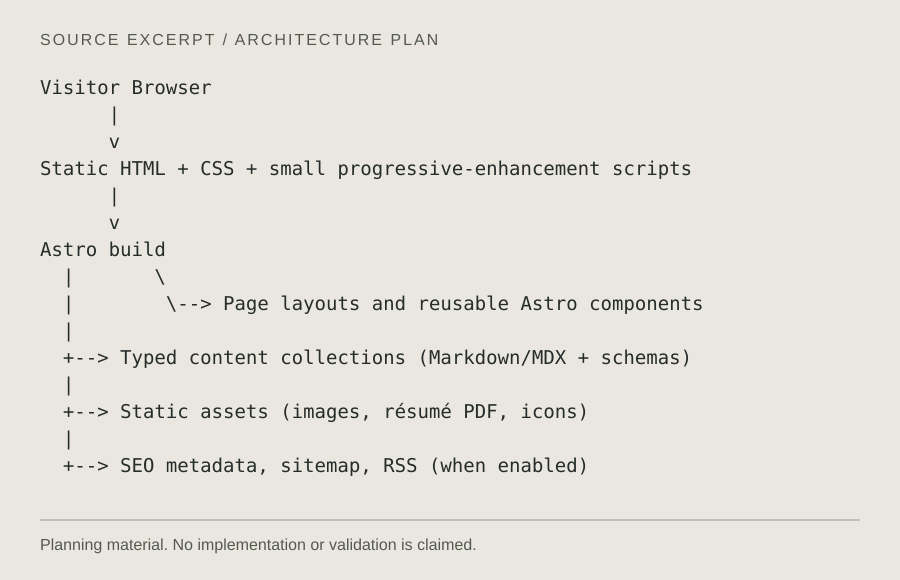

Layout fixture 01 · not portfolio work
A technical question.
A traceable investigation.
This specimen shows where a real project’s question, constraints and scope would appear. No project, result or contribution is claimed.
- Role
- Awaiting verified project content
- Evidence
- Planning excerpt only
- Validation
- No test result supplied


Read figure text
Visitor Browser
|
v
Static HTML + CSS + small progressive-enhancement scripts
|
v
Astro build
| \
| \--> Page layouts and reusable Astro components
|
+--> Typed content collections (Markdown/MDX + schemas)
|
+--> Static assets (images, résumé PDF, icons)
|
+--> SEO metadata, sitemap, RSS (when enabled)